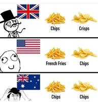

0


Adafruit managing director Phillip Torrone (also long-time Slashdot reader ptorrone ) writes: Washington State lawmakers are proposing bills (HB 2320 and HB 2321) that would require 3D printers and CNC machines to block certain designs using software-based "firearms blueprint detection algorithms." In practice, this means scanning every print file, comparing it against a government-maintained database, and preventing "skilled users" from bypassing the system. Supporters frame this as a response to untraceable "ghost guns," but even federal prosecutors admit the tools involved are ordinary manufacturing equipment. Critics warn the language is overbroad, technically unworkable, hostile to open source, and likely to push printing toward cloud-locked, subscription-based systems—while doing little to stop criminals.
Read more of this story at Slashdot.
Richard Stallman spoke Friday at Atlanta's Georgia Institute of Technology, continuing his activism for free software while also addressing today's new technologies.
Speaking about AI, Stallman warned that "nowadays, people often use the term artificial intelligence for things that aren't intelligent at all..." He makes a point of calling large language models "generators" because "They generate text and they don't understand really what that text means." (And they also make mistakes "without batting a virtual eyelash. So you can't trust anything that they generate.") Stallman says "Every time you call them AI, you are endorsing the claim that they are intelligent and they're not. So let's let's refuse to do that."
"So I've come up with the term Pretend Intelligence. We could call it PI. And if we start saying this more often, we might help overcome this marketing hype campaign that wants people to trust those systems, and trust their lives and all their activities to the control of those systems and the big companies that develop and control them."
"By the way, as far as I can tell, none of them is free software."
When it comes to today's cars, Stallman says they contain "malicious functionalities... Cars should not be connected. They should not upload anything." (He adds that "I am hoping to find a skilled mechanic to work with me in a project to make disconnected cars.")
And later Stallman calls the smartphone "an Orwellian tracking and surveillance device," saying he refuses to own one. (An advantage of free software is that it allows the removal of malicious functionalities.)
Stallman spoke for about 53 minutes — but then answered questions for nearly 90 minutes longer. Here's some of the highlights...
Read more of this story at Slashdot.
Newsweek reports on how the U.S. Congress is debating "kill switch" technology for vehicles, "which would be able to monitor diver behavior, detect impairment such as intoxication and intervene..."
"While the technology is not yet a legal requirement in cars, Congress passed a law with the Infrastructure Investment and Jobs Act in 2021 that requires the Department of Transportation to create the mandate."
Republican Representative Thomas Massie of Kentucky introduced an amendment to a federal spending bill that would reverse the mandating of the technology. On Thursday, 160 Republicans voted in favor, but the legislation failed 164-268, according to the House Clerk's official roll call — with 57 Republicans joining 211 Democrats in voting against it...
The House vote signals substantial Republican support for curbing any move toward mandated impaired-driving prevention systems, but not enough to pass such legislation. Critics of the kill switch technology see it as government overreach, while those in favor argue that it could prove to be lifesaving.
Thanks to long-time Slashdot reader SonicSpike for sharing the article.
Read more of this story at Slashdot.
An anonymous reader shared this article from the blog Linuxiac
In a blog post, Alan Pope, a longtime Ubuntu community figure and former Canonical employee who remains an active Snap publisher... [warns of] a persistent campaign of malicious snaps impersonating cryptocurrency wallet applications. These fake apps typically mimic well-known projects such as Exodus, Ledger Live, or Trust Wallet, prompting users to enter wallet recovery phrases, which are then transmitted to attackers, resulting in drained funds.
The perpetrators had originally used similar-looking characters from other alphabets to mimic other app listings, then began uploading "revisions" to other innocuous-seeming (approved) apps that would transform their original listing into that of a fake crypto wallet app.
But now they're re-registering expired domains to take over existing Snap Store accounts, which Pope calls "a significant escalation..."
I worked for Canonical between 2011 and 2021 as an Engineering Manager, Community Manager, and Developer Advocate. I was a strong advocate for snap packages and the Snap Store. While I left the company nearly five years ago, I still maintain nearly 50 packages in the Snap Store, with thousands of users... Personally, I want the Snap Store to be successful, and for users to be confident that the packages they install are trustworthy and safe.
Currently, that confidence isn't warranted, which is a problem for desktop Linux users who install snap packages. I report every bad snap I encounter, and I know other security professionals do the same — even though doing so results in no action for days sometimes... To be clear: none of this should be seen as an attack on the Snap Store, Canonical, or the engineers working on these problems. I'm raising awareness of an issue that exists, because I want it fixed... But pretending there isn't a problem helps nobody.
Read more of this story at Slashdot.
Earlier this month, the media site Press Gazette reported that now Google "is increasingly prioritising AI summaries, X posts and Youtube videos" on its "Discover" feed (which appears on the leftmost homescreen page of many Android phones and the Google app's homepage).
"The changes could be devastating for publishers who rely heavily on Discover for referral traffic. And it looks set to accelerate a global trend of declining traffic to publishers from both Google search and Discover."
Xavi Beumala from website analytics platform Marfeel warned in a research update: "Google Discover is no longer a publisher-first surface. It's becoming an AI platform with YouTube and X absorbing real estate that once went to newsrooms..." [They warn later that "This is not a marginal UI experiment. It is a reallocation of feed real estate away from links and toward inline Youtube plays and generated summaries."] Google says it prioritises "helpful, reliable, people-first content". Unlike Google News, there is no requirement that Google Discover showcases bona fide publisher websites.
In recent months fake news stories published by fraudulent website publishers have been promoted on Google Discover, reaping tens of millions of clicks. Google said it was working on a "fix" for this issue...
Facebook, Instagram and Tiktok content may also start flowing into the Discover feed in future. When Google announced the addition of posts from X, Instagram and Youtube Shorts in September, it said there would be "more platforms to come".
Read more of this story at Slashdot.
California-based Karman Industries "says it has developed a cooling system that uses SpaceX rocket engine technology to rein in the environmental impact of data centers," reports the Los Angeles Times, "chilling them with less space, less power and no water."
Karman has developed a cooling system similar to the heat pumps in the average home, except its pumps use liquid carbon dioxide as refrigerant, which is circulated using rocket engine technology rather than fans. The company's efficient pumps can reduce the space required for data center cooling equipment by 80%.
Over the years, data centers have used fans and air conditioning to blow cold air on the chips. Bigger facilities pass cold liquid through tubes near the chips to absorb the heat. This hot liquid is sent outside to a cooling yard, where sprawling networks of pipes use as much water as a city of 50,000 people to remove the heat. A 50 megawatt data center also uses enough electricity to power a mid-sized city... Cooling systems account for up to 40% of a data center's power consumption and an average midsized data center consumes more than 35,000 gallons of water per day...
U.S. data centers will consume about 8% of all electricity in the country by 2030, according to the International Energy Agency... The cooling systems are projected to use up to 33 billion gallons of water by 2028 per year... To serve this seemingly insatiable market, Karman has developed a rotating compressor that spins at 30,000 revolutions per minute — nearly 10 times faster than traditional compressors — to move heat...
About a third of Karman's 23-person team came from SpaceX or Rocket Lab, and they co-opted technologies from aerospace engineering and electric vehicles to design the mechanics for the high-speed motors. The system uses a special type of carbon dioxide under high pressure to transfer heat from the data center to the outside air. Depending on the conditions, it can do the same amount of cooling using less than half the energy. Karman's heat pump can either reject heat to air, or route it into extra cooling, or even power generation.
The company "recently raised $20 million," according to the article, "and expects to start building its first compressors in Long Beach later this year...."
Read more of this story at Slashdot.
Brax Technologies just announced "a privacy-focused alternative to locked-down tablets" called open_slate that can double as a consumer tablet and a Linux-capable workstation on ARM.
Earlier Brax Technologies built the privacy-focused smartphone BraX3, which co-founder Plamen Todorov says proved "a privacy-focused mobile device could be designed, crowdfunded, manufactured, and delivered outside the traditional Big Tech ecosystem."
Just as importantly, BraX3 showed us the value of building with the community. The feedback we received — what worked, what didn't, and what people wanted next — played a major role in shaping our direction going forward. Today, we're ready to share the next step in that journey...
They're promising their "2-in-1" open_slate tablet will be built with these guiding principles:
Modularity beyond repairability". ("In addition to a user-replaceable battery, it supports an M.2 expansion slot, allowing users to customize storage and configurations to better fit their needs.")
Hardware-level privacy and control, with physical switches allowing users to disable key components like wireless radios, sensors, microphones, and cameras.
Multi-OS compatibility, supporting "multiple" Android-based operating systems as well as native Linux distributions. ("We're working with partners and the community to ensure proper, long-term OS support rather than one-off ports.")
Longevity by design — a tablet that's "supported over time"
Brax has already created an open thread with preliminary design specs. "The planned retail price is 599$ for the base version and 799$ for the Pro version," they write. "We will be offering open_slate (both versions) at a discount during our pre-order campaign, starting as low as 399$ for the base version and 529$ for the Pro version for limited quantities only which may sell out in a day or two from launching pre-orders...
"Pre-orders will open in February, via IndieGoGo. Make sure to subscribe for notifications if you don't want to miss the launch date."
Thanks to long-time Slashdot reader walterbyrd for sharing the news.
Read more of this story at Slashdot.
KDE's "Plasma Login Manager" is apparently dropping support for FreeBSD, the Unix-like operating system, reports the blog It's FOSS. They cite a recently-accepted merge request from a KDE engineer to drop the code supporting FreeBSD, since the login manager relies on systemd/logind:
systemd and logind look like hard dependencies of the login manager, which means the software is built to work exclusively with these components and cannot function without them... logind is a component of systemd that is responsible for user session management...
This doesn't mean that KDE has abandoned the operating system altogether. FreeBSD users can still run the KDE Plasma desktop environment and continue using SDDM, the current login manager that works just fine on such systems.
The article argues FreeBSD users "won't really care much for missing out on this as they have plenty of login manager options available."
Read more of this story at Slashdot.
An anonymous reader shared this report from The Verge:
In early December, I brought you the news that Google has begun replacing Verge headlines, and those of our competitors, with AI clickbait nonsense in its content feed [which appears on the leftmost homescreen page of many Android phones and the Google app's homepage]. Google appeared to be backing away from the experiment, but now tells The Verge that its AI headlines in Google Discover are a feature, one that "performs well for user satisfaction." I once again see lots of misleading claims every time I check my phone...
For example, Google's AI claimed last week that "US reverses foreign drone ban," citing and linking to this PCMag story for the news. That's not just false — PCMag took pains to explain that it's false in the story that Google links to...! What does the author of that PCMag story think? "It makes me feel icky," Jim Fisher tells me over the phone. "I'd encourage people to click on stories and read them, and not trust what Google is spoon-feeding them." He says Google should be using the headline that humans wrote, and if Google needs a summary, it can use the ones that publications already submit to help search engines parse our work.
Google claims it's not rewriting headlines. It characterizes these new offerings as "trending topics," even though each "trending topic" presents itself as one of our stories, links to our stories, and uses our images, all without competent fact-checking to ensure the AI is getting them right... The AI is also no longer restricted to roughly four words per headline, so I no longer see nonsense headlines like "Microsoft developers using AI" or "AI tag debate heats." (Instead, I occasionally see tripe like "Fares: Need AAA & AA Games" or "Dispatch sold millions; few avoided romance.")
But Google's AI has no clue what parts of these stories are new, relevant, significant, or true, and it can easily confuse one story for another. On December 26th, Google told me that "Steam Machine price & HDMI details emerge." They hadn't. On January 11th, Google proclaimed that "ASUS ROG Ally X arrives." (It arrived in 2024; the new Xbox Ally arrived months ago.) On January 20th, it wrote that "Glasses-free 3D tech wows," introducing readers to "New 3D tech called Immensity from Leia" — but linking to this TechRadar story about an entirely different company called Visual Semiconductor...
Google declined our request for an interview to more fully explain the idea.
The site Android Police spotted more inaccurate headlines in December:
A story from 9to5Google, which was actually titled 'Don't buy a Qi2 25W wireless charger hoping for faster speeds — just get the 'slower' one instead' was retitled as 'Qi2 slows older Pixels.' Similarly, Ars Technica's 'Valve's Steam Machine looks like a console, but don't expect it to be priced like one' was changed to 'Steam Machine price revealed.' At the time, we believed that the inaccuracies were due to the feature being unstable and in early testing.... Now, Google has stopped calling Discover replacing human-written headlines as an "experiment."
"Google buries a 'Generated with AI, which can make mistakes' message under the 'See more' button in the summary," reports 9to5Google, "making it look like this is the publisher's intended headline."
While it is obvious that Google has refined this feature over the past couple of months, it doesn't take long to still find plenty of misleading headlines throughout Discover... Another article from NotebookCheck about an Anker power bank with a retractable cable was given a headline that's about another product entirely. A pair of headlines from Tom's Hardware and PCMag, meanwhile, show the two sides of using AI for this purpose. The Tom's Hardware headline, "Free GPU & Amazon Scams," isn't representative of the actual article, which is about someone who bought a GPU from Amazon, canceled their order, and the retailer shipped it anyway. There's nothing about "Amazon Scams" in the article.
Read more of this story at Slashdot.
Can Aircela's machine "create gasoline using little more than electricity and the air that we breathe"? Jalopnik reports...
The Aircela machine works through a three-step process. It captures carbon dioxide directly from the air... The machine also traps water vapor, and uses electrolysis to break water down into hydrogen and oxygen... The oxygen is released, leaving hydrogen and carbon dioxide, the building blocks of hydrocarbons. This mixture then undergoes a process known as direct hydrogenation of carbon dioxide to methanol, as documented in scientific papers.
Methanol is a useful, though dangerous, racing fuel, but the engine under your hood won't run on it, so it must be converted to gasoline. ExxonMobil has been studying the process of doing exactly that since at least the 1970s. It's another well-established process, and the final step the Aircela machine performs before dispensing it through a built-in ordinary gas pump. So while creating gasoline out of thin air sounds like something only a wizard alchemist in Dungeons & Dragons can do, each step of this process is grounded in science, and combining the steps in this manner means it can, and does, really work.
Aircela does not, however, promise free gasoline for all. There are some limitations to this process. A machine the size of Aircela's produces just one gallon of gas per day... The machine can store up to 17 gallons, according to Popular Science, so if you don't drive very much, you can fill up your tank, eventually... While the Aircela website does not list a price for the machine, The Autopian reports it's targeting a price between $15,000 and $20,000, with hopes of dropping the price once mass production begins. While certainly less expensive than a traditional gas station, it's still a bit of an investment to begin producing your own fuel. If you live or work out in the middle of nowhere, however, it could be close to or less than the cost of bringing gas to you, or driving all your vehicles into a distant town to fill up. You're also not limited to buying just one machine, as the system is designed to scale up to produce as much fuel as you need.
The main reason why this process isn't "something for nothing" is that it takes twice as much electrical energy to produce energy in the form of gasoline. As Aircela told The Autopian " Aircela is targeting >50% end to end power efficiency. Since there is about 37kWh of energy in a gallon of gasoline we will require about 75kWh to make it. When we power our machines with standalone, off-grid, photovoltaic panels this will correspond to less than $1.50/gallon in energy cost."
Thanks to long-time Slashdot reader Quasar1999 for sharing the news.
Read more of this story at Slashdot.
The "NexDock" (from Nex Computer) already turns your phone into a laptop workstation. Purism chose it as the docking station for their Librem 5 phones.
But now Nex is offering its own smartphone "that runs Android 16, launches Debian, and dual-boots into Windows 11," according to the blog It's FOSS:
Fourteen years after the first concept video was teased, the NexPhone is here, powered by a Qualcomm QCM6490, which, the keen-eyed among you will remember from the now-discontinued Fairphone 5.
By 2026 standards, it's dated hardware, but Nex Computer doesn't seem to be overselling it, as they expect the NexPhone to be a secondary or backup phone, not a flagship contender. The phone includes an Adreno 643 GPU, 12GB of RAM, and 256GB of internal storage that can be expanded up to 512GB via a microSD card.
In terms of software, the NexPhone boots into NexOS, a bloatware-free and minimal Android 16 system, with Debian running as an app with GPU acceleration, and Windows 11 being the dual-boot option that requires a restart to access. ["And because the default Windows interface isn't designed for a handheld screen, we built our own Mobile UI from the ground up to make Windows far easier to navigate on a phone," notes a blog post from Nex founder/CEO Emre Kosmaz].
And, before I forget, you can plug the NexPhone into a USB-C or HDMI display, add a keyboard and mouse to transform it into a desktop workstation.
There's a camera plus "a comprehensive suite of sensors," according to the article, "that includes a fingerprint scanner, accelerometer, magnetometer, gyroscope, ambient light sensor, and proximity sensor....
"NexPhone is slated for a Q3 2026 release (July-September)..."
Back in 2012, explains Nex founder/CEO Emre Kosmaz, "most investors weren't excited about funding new hardware. One VC even told us, 'I don't understand why anyone buys anything other than Apple'..."
Over the last decade, we kept building and shipping — six generations of NexDock — helping customers turn phones into laptop-like setups (display + keyboard + trackpad). And now the industry is catching up faster than ever. With Android 16, desktop-style experiences are becoming more native and more mainstream. That momentum is exactly why NexPhone makes sense today...
Thank you for being part of this journey. With your support, I hope NexPhone can help move us toward a world where phones truly replace laptops and PCs — more often, more naturally, and for more people.
Read more of this story at Slashdot.
Small modular nuclear reactors (or SMRs) are touted as "cheaper, safer, faster to build and easier to finance" than conventional nuclear reactors, reports CNN. Amazon has invested in X-Energy, and earlier this month, Meta announced a deal with Oklo, and in Michigan last month, Holtec began the long formal licensing process for two SMRs with America's Nuclear Regulatory Commission next to a nuclear plant it hopes to reactive. (And in 2024, California-based Kairos Power broke ground in Tennessee on a SMR "demo" reactor.)
But "The reality, as ever, is likely to be messier and experts are sounding notes of caution..."
All the arguments in favor of SMRs overlook a fundamental issue, said Edwin Lyman, director of nuclear power safety at the Union of Concerned Scientists: They are too expensive. Despite all the money swilling around the sector, "it's still not enough," he told CNN. Nuclear power cannot compete on cost with alternatives, both fossil fuels and increasingly renewable energy, he said."
Some SMRs also have an issue with fuel. The more unconventional designs, those cooled by salt or gas, often require a special type of fuel called high-assay low-enriched uranium, known as HALEU (pronounced hay-loo). The amounts available are limited and the supply chain has been dominated by Russia, despite efforts to build up a domestic supply. It's a major risk, said Nick Touran [a nuclear engineer and independent consultant]. The biggest challenge nuclear has is competing with natural gas, he said, a "luxury, super expensive fuel may not be the best way." There is still stigma around nuclear waste, too. SMR companies say smaller reactors mean less nuclear waste, but 2022 research from Stanford University suggested some SMRs could actually generate more waste, in part because they are less fuel efficient...
As companies race to prove SMRs can meet the hype, experts appear to be divided in their thinking. For some, SMRs are an expensive — and potentially dangerous — distraction, with timelines that stretch so far into the future they cannot be a genuine answer to soaring needs for clean power right now.
Nuclear engineering/consultant Touran told CNN the small reactors are "a technological solution to a financial problem. No venture capitalists can say, like, 'oh, sure, we'll build a $30 billion plant.' But, if you're down into hundreds of millions, maybe they can do it."
Read more of this story at Slashdot.
0
An anonymous reader shared this report from the Guardian:
Google's search feature AI Overviews cites YouTube more than any medical website when answering queries about health conditions, according to research that raises fresh questions about a tool seen by 2 billion people each month.
The company has said its AI summaries, which appear at the top of search results and use generative AI to answer questions from users, are "reliable" and cite reputable medical sources such as the Centers for Disease Control and Prevention and the Mayo Clinic. However, a study that analysed responses to more than 50,000 health queries, captured using Google searches from Berlin, found the top cited source was YouTube. The video-sharing platform is the world's second most visited website, after Google itself, and is owned by Google. Researchers at SE Ranking, a search engine optimisation platform, found YouTube made up 4.43% of all AI Overview citations. No hospital network, government health portal, medical association or academic institution came close to that number, they said. "This matters because YouTube is not a medical publisher," the researchers wrote. "It is a general-purpose video platform...."
In one case that experts said was "dangerous" and "alarming", Google provided bogus information about crucial liver function tests that could have left people with serious liver disease wrongly thinking they were healthy. The company later removed AI Overviews for some but not all medical searches... Hannah van Kolfschooten, a researcher specialising in AI, health and law at the University of Basel who was not involved with the research, said: "This study provides empirical evidence that the risks posed by AI Overviews for health are structural, not anecdotal. It becomes difficult for Google to argue that misleading or harmful health outputs are rare cases.
"Instead, the findings show that these risks are embedded in the way AI Overviews are designed. In particular, the heavy reliance on YouTube rather than on public health authorities or medical institutions suggests that visibility and popularity, rather than medical reliability, is the central driver for health knowledge."
Read more of this story at Slashdot.
Trend Micro's Zero Day Initiative sponsored its third annual Pwn2Own Automotive competition in Tokyo this week, receiving 73 entries, the most ever for a Pwn2Own event.
"Under Pwn2Own rules, all disclosed vulnerabilities are reported to affected vendors through ZDI," reports Help Net Security, "with public disclosure delayed to allow time for patches."
Infotainment platforms from Tesla, Sony, and Alpine were among the systems compromised during demonstrations. Researchers achieved code execution using techniques that included buffer overflows, information leaks, and logic flaws. One Tesla infotainment unit was compromised through a USB-based attack, resulting in root-level access. Electric vehicle charging infrastructure also received significant attention. Teams successfully demonstrated exploits against chargers from Autel, Phoenix Contact, ChargePoint, Grizzl-E, Alpitronic, and EMPORIA. Several attacks involved chaining multiple vulnerabilities to manipulate charging behavior or execute code on the device. These demonstrations highlighted how charging stations operate as network-connected systems with direct interaction with vehicles.
There's video recaps on the ZDI YouTube channel — apparently the Fuzzware.io researchers "were able to take over a Phoenix Contact EV charger over bluetooth."
Three researchers also exploited the Alpitronic's HYC50 fast-charging with a classic TOCTOU bug, according to the event's site, "and installed a playable version of Doom to boot." They earned $20,000 — part of $1,047,000 USD was awarded during the three-day event.
More coverage from SecurityWeek:
The winner of the event, the Fuzzware.io team, earned a total of $215,500 for its exploits. The team received the highest individual reward: $60,000 for an Alpitronic HYC50 EV charger exploit delivered through the charging gun. ZDI described it as "the first public exploit of a supercharger".
Read more of this story at Slashdot.
This month saw results from a yearlong global study of "potential negative risks that generative AI poses to student". The study (by the Brookings Institution's Center for Universal Education) also suggests how to prevent risks and maximize benefits:
After interviews, focus groups, and consultations with over 500 students, teachers, parents, education leaders, and technologists across 50 countries, a close review of over 400 studies, and a Delphi panel, we find that at this point in its trajectory, the risks of utilizing generative AI in children's education overshadow its benefits.
"At the top of Brookings' list of risks is the negative effect AI can have on children's cognitive growth," reports NPR — "how they learn new skills and perceive and solve problems."
The report describes a kind of doom loop of AI dependence, where students increasingly off-load their own thinking onto the technology, leading to the kind of cognitive decline or atrophy more commonly associated with aging brains... As one student told the researchers, "It's easy. You don't need to (use) your brain." The report offers a surfeit of evidence to suggest that students who use generative AI are already seeing declines in content knowledge, critical thinking and even creativity. And this could have enormous consequences if these young people grow into adults without learning to think critically...
Survey responses revealed deep concern that use of AI, particularly chatbots, "is undermining students' emotional well-being, including their ability to form relationships, recover from setbacks, and maintain mental health," the report says. One of the many problems with kids' overuse of AI is that the technology is inherently sycophantic — it has been designed to reinforce users' beliefs... Winthrop offers an example of a child interacting with a chatbot, "complaining about your parents and saying, 'They want me to wash the dishes — this is so annoying. I hate my parents.' The chatbot will likely say, 'You're right. You're misunderstood. I'm so sorry. I understand you.' Versus a friend who would say, 'Dude, I wash the dishes all the time in my house. I don't know what you're complaining about. That's normal.' That right there is the problem."
AI did have some advantages, the article points out:
The report says another benefit of AI is that it allows teachers to automate some tasks: "generating parent emails ... translating materials, creating worksheets, rubrics, quizzes, and lesson plans" — and more. The report cites multiple research studies that found important time-saving benefits for teachers, including one U.S. study that found that teachers who use AI save an average of nearly six hours a week and about six weeks over the course of a full school year...
AI can also help make classrooms more accessible for students with a wide range of learning disabilities, including dyslexia. But "AI can massively increase existing divides" too, [warns Rebecca Winthrop, one of the report's authors and a senior fellow at Brookings]. That's because the free AI tools that are most accessible to students and schools can also be the least reliable and least factually accurate... "[T]his is the first time in ed-tech history that schools will have to pay more for more accurate information. And that really hurts schools without a lot of resources."
The report calls for more research — and make several recommendations (including "holistic" learning and "AI tools that teach, not tell.") But this may be their most important recommendation. "Provide a clear vision for ethical AI use that centers human agency..."
"We find that AI has the potential to benefit or hinder students, depending on how it is used."
Read more of this story at Slashdot.
Cade Metz / New York Times : Ricursive, founded by ex-Google researchers to automate advanced chip design, raised $335M from Sequoia, Radical, Lightspeed, and others at a $4B valuation — One new start-up is called Recursive with an “e.” Another is called Ricursive with an “i.” They are trying to do the same thing …
Irina Anghel / Bloomberg : Morgan Stanley: UK companies reported that AI led to 8% net job losses over the past 12 months, above Japan's 7%, Germany's 4%, Australia's 2%; the US added 2% — The UK is losing more jobs than it's creating because of artificial intelligence — and at a faster rate than its international peers.
Josh Chin / Wall Street Journal : Documents: China's military is focused on harnessing AI to deploy swarms of drones, robot dogs, and other autonomous systems, learning from hawks and coyotes — Beijing's military focuses on swarming drones that can pick off prey or robots that can chase down enemies
Jasmine Sun / @jasmine's substack : Claude Code can feel daunting, and most people's problems are not software-shaped, but it is clearly autonomous and the home-cooked app renaissance is great — are your problems software-shaped? — ∙ Paid — If you tell a friend they can now instantly create any app, they'll probably say “Cool!
Barbara Moens / Financial Times : The EU opens a formal DSA investigation into xAI over Grok generating sexualized images of women and children; xAI faces fines of up to 6% of global revenue — European regulators begin investigation into creation and spread of sexualised images of women and children
Rafe Rosner-Uddin / Financial Times : Digital Realty, QTS, and NTT Data warn the data center industry is doing a poor job of combating local opposition; 24+ US projects were blocked in January alone — Companies set to increase advertising spending this year to defuse growing public opposition to vast projects
Dong Cao / Bloomberg : Chinese autonomous trucking company DeepWay raised ~$173M ahead of its planned Hong Kong IPO, filed in November 2025; DeepWay reported ~$215M in H1 2025 revenue — DeepWay Technology Co., a Chinese company that makes technology for heavy-duty trucking, has raised about 1.2 billion yuan …
Lauren Thomas / Wall Street Journal : Quantum computing company IonQ acquires US chipmaker SkyWater for ~$1.8B, paying $35/share, in IonQ's biggest deal yet; SkyWater will operate as a subsidiary — IonQ works with the U.S. government and has been on a deal spree — Quantum-computing company IonQ struck a deal …
Bloomberg : Sources: SoftBank halts talks about a ~$50B acquisition of US data center operator Switch, a setback to Masayoshi Son's goal to roll out Stargate infrastructure — SoftBank Group Corp. has halted talks about an acquisition of US data center operator Switch Inc., a setback …
Nat Rubio-Licht / The Deep View : London-based enterprise AI video startup Synthesia raised a $200M Series E led by GV at a $4B valuation, up from $2.1B after raising $180M in January 2025 — W — hile AI video generators like OpenAI's Sora, Google's Veo, and Kling are best known for creating “AI slop” …
John Keilman / Wall Street Journal : Manufacturers say that AI is fundamentally changing how some new products are created, finding unexpected solutions and reducing R&D time from weeks to days — PPG, 3M and other manufacturers say digital tools can suggest counterintuitive solutions and do weeks of work within days
Zack Abrams / The Block : Entropy, a decentralized crypto custodian that raised a $25M seed led by a16z in June 2022, is shutting down after “several pivots, and two rounds of layoffs” — Partner offers — Quick Take — Entropy founder Tux Pacific announced the crypto startup is shutting down after four years …
Yoolim Lee / Bloomberg : Sources: Samsung enters the final qualification phase to supply its HBM4 chips to Nvidia, and targets mass production in February; Samsung's shares jumped 3.2% — Samsung Electronics Co. is getting close to securing certification from Nvidia Corp. for the latest version of its AI memory chip …
Andy Kemp / Gallup : Gallup: 12% of employed US adults reported using AI daily in their job in Q4 2025, compared to 10% in Q3 and 8% in Q2; 49% say they never use AI in their role — The total percentage of employees using AI remains flat, but use varies meaningfully by industry and role type.
Jason Lemkin / SaaStr : Many AI founders now find it necessary to raise at valuations requiring absolute domination of the field; Brex, once valued at $12B, shows the downsides of this — Capital One just announced it's acquiring Brex for $5.15 billion. An incredible, top .1% “exit” in less than 10 years …